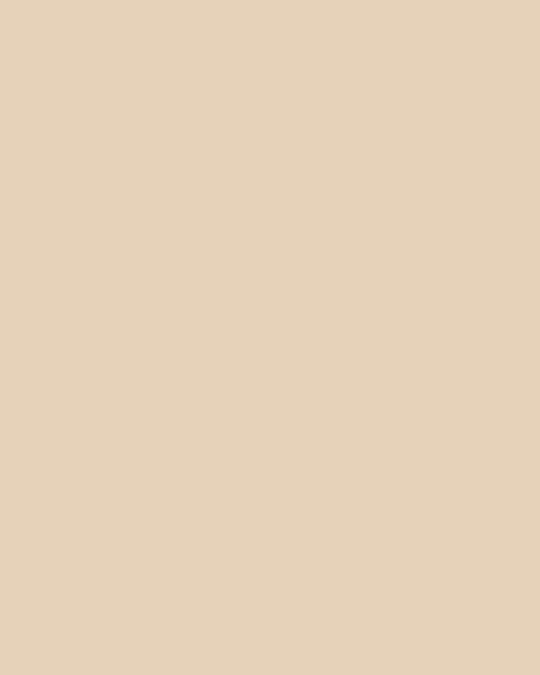

Coaching professionnel · Régulation somatique & vocale
Trouvez votre fréquence.
Diapason Coaching accompagne les individus, les équipes et les organisations dans les périodes de changement afin de cultiver davantage de vitalité, de stabilité et de sens.

Méthodologie
Une approche intégrée combinant coaching professionnel, régulation neurophysiologique et pratiques somatiques et vocales — pour des transformations durables.
Conférences autour des outils clés de régulation face au changement. Créer une prise de conscience commune des mécanismes humains.
60–90 minWorkshops & ateliers expérientiels pour tester les outils de régulation, de vitalité et d'adaptation au changement.
2h — 1 journéeSéances de coaching individuel et confidentiel pour accompagner les déséquilibres liés aux transitions et aux enjeux de leadership.
Accompagnement suiviOffres de services
Que vous soyez une organisation ou un particulier, je propose des formats adaptés à votre contexte et à vos besoins.
Lecture intégrative des transitions — mécanique cognitive, émotionnelle et physiologique du changement. Ressources et outils clés de régulation.
SensibilisationExplorer la voix, le souffle et le système nerveux comme ressources de régulation et d'ancrage dans des contextes professionnels exigeants.
Présence & impactPasser du « comprendre » au « ressentir ». Outils concrets de régulation neurophysiologique, pratiques somatiques de recentrage.
ExpérientielVoix, respiration et corps comme leviers de régulation du système nerveux. Communication plus alignée, calme et impactante.
Régulation vocaleAprès burnout, congé parental ou absence longue durée : restaurer la vitalité, réguler le système nerveux, retour progressif à un rythme soutenable.
RécupérationMobilité, prise de poste, réorganisation, reconversion : traverser les transitions avec clarté, stabilité et alignement.
TransitionsClarifier vos besoins, valeurs, objectifs. Retrouver une meilleure écoute de votre corps, apaiser le mental, renforcer votre ancrage et votre confiance en vous.
Individuel · ConfidentielPour les personnes en burnout suivies par un médecin, un espace bienveillant avec pratiques vocales et somatiques pour entraîner votre système nerveux à se réguler.
Approche holistiqueLa voix est intimement liée au corps, au souffle, aux émotions et au système nerveux. Ces ateliers proposent un espace pour relâcher les tensions, remettre du mouvement dans le corps et retrouver un élan vital grâce au souffle, au son et au chant collectif. Accessible à tous — aucun prérequis musical.
Groupe · Accessibilité totaleÀ propos
Entre l'héritage d'un papa psychologue et musicothérapeute et une vie entière nourrie par le chant et la danse, j'ai toujours évolué à la rencontre du corps, de la voix et de l'humain.
Après un Master en Management International (ICHEC) et près de quinze ans d'accompagnement en entreprise, j'ai enrichi ma pratique de coaching en intégrant la régulation neurophysiologique, les pratiques somatiques et vocales.
( Camille Romain )
ÉchangeonsTémoignages
"Camille m'a aidée à clarifier mes priorités et à m'affirmer dans mon rôle. Une transformation profonde et durable."
— Sophie M., Directrice RH"Un accompagnement bienveillant et exigeant à la fois. J'ai retrouvé confiance en moi et en mes choix de vie."
— Thomas R., Entrepreneur"Les ateliers voix m'ont donné des outils concrets que j'utilise encore aujourd'hui pour gérer mon stress au quotidien."
— Julie B., ManagerContact
La première séance découverte est offerte. Échangeons sur votre situation.
Parcours Diapason® en entreprise ? Contactez-moi pour une présentation personnalisée de l'offre modulaire adaptée à votre organisation.